Плагин Auto Fx (часть 3)
Фильтры группы Atmosphere
Фильтры группы Atmosphere (Атмосфера) (рис. 1) находятся в категории эффектов Mystical Focus (Мистический фокус), которую мы продолжим рассматривать в этом уроке.
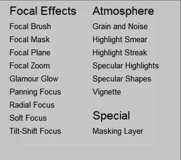
Эта группа включает в себя 6 фильтров. Начнем по порядку их рассмотрение.
Первый фильтр в этой группе – Grain and Noise (Зернистость и шумы). Честно говоря, применение шумов, довольно специфичное занятие и их использование возможно в редких случаях. Как правило, их применяют в коллажах или в изображениях создаваемых с нуля. Врядли добавление шума в фото, можно назвать его улучшением или добавлением хорошего эффекта. Чаще приходится решать обратную задачу – удаление и борьба с зернистостью и шумами. Теперь давайте кратенько рассмотрим фильтр Grain and Noise (Зернистость и шумы). Окно фильтра показано на рис. 2.
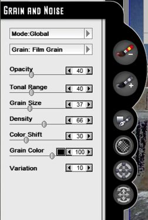
В окне фильтра мы видим уж знакомые нам элементы управления. Однако, есть и присущие только этому фильтру. Но это естественно, ведь назначение фильтров различное. В фильтре можно выбрать два режима работы: Global (Глобальный) и Brush On (Кисть), с которыми мы уже знакомы.
В этом фильтре имеется всего два типа эффектов зернистости: Film Grain (Зернистость пленки) и Stochastic Noise (Стохастический шум).
Первый тип зернистости создает эффект зернистости пленки, который часто можно увидеть на снимках, второй фильтр создает эффект шума, который напоминает дефекты встречающиеся на отсканированных снимках, когда стекло сканера покрыто пятнами, а в итоге изображение покрыто дефектами различной формы, оттенков и размера.
Я бы сказал, что с помощью этого фильтра проще создать пособие по дефектам, чем где-то его применить. Но все же попробуем его как-то приспособить с пользой для дела. На рис. 3 показано исходное изображение.
Это какой-то неизвестный мне архитектурный ансамбль, расположенный неизвестно где. Видно, что время чуточку уже над ним поработало. Давайте мы тоже немного над ним поработаем… Для того, чтобы увидеть работу фильтра, мы не станем обрабатывать все изображение, а только лишь лицевую сторону передней ступеньки. Выделим ее инструментом Rectangle Mask (Прямоугольная маска), инвертируем маску и запустим фильтр: Select Effect > Mystical Focus > Grain and Noise (Выбрать эффект > Мистический фокус > Зернистость и шумы). Работать будем в режиме Global (Глобальный), т. к. маска все равно не даст распространить эффект на все изображение.
В окне фильтра сделаем настройки, как на рис. 4.
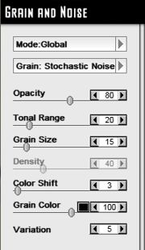
Щелкнем в окне плагина на кнопке ОК. Результат показан на рис. 5.
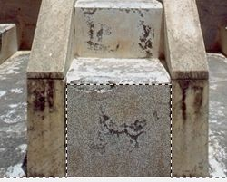
Обратите внимание, что лицевая часть ступеньки покрылась сеткой мелких дефектов. Теперь надо эти дефекты более или менее сделать рельефными. Для этого снова инвертируем маску и воспользуемся фильтром: Effects > 3D Effects > Emboss (Эффекты > Трехмерные эффекты > Рельеф) (рис. 6).
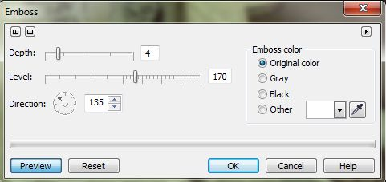
Теперь немного придадим резкости по краям дефектов: Image > Correction > Tune Sharpen (Изображение > Коррекция > Настройка повышения резкости) (рис. 7).
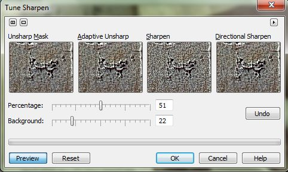
Следует выбрать вариант Directional Sharpen (Направленное повышение резкости). Можно немного обработать трещину по центру инструментом Clone From Saved (Клонирование из сохраненного), чтобы вернуть ей первоначальный вид. В итоге получим такой результат (рис. 8).
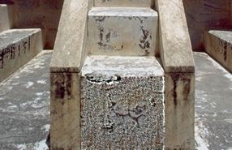
Конечно результат – не шедевр, но для получения лучшего, надо довольно долго возиться с подбором параметров (а еще лучше, с подбором более подходящего изображения), чего мне делать вовсе не хотелось.
Но раз уж мы коснулись рассмотрения этого фильтра, давайте бегло посмотрим назначение его элементов управления:
• Ползунок Opacity (Непрозрачность) – задает прозрачность эффекта;
• Ползунок Tonal Range (Тональный диапазон) – определяет, где будут располагаться зерна в изображении, на основе тонального диапазона изображения;
• Ползунок Grain Size (Размер зерна) – определяет размер зерен;
• Ползунок Density (Плотность) – задает плотность зерен, т. е. количество зерен на единицу поверхности. При выборе типа Stochastic Noise (Стохастический шум), параметр Density (Плотность) недоступен;
• Ползунок Color Shift (Сдвиг цвета) – управляет прорисовкой зерен в изображении, путем небольшого цветового сдвига. Большие значения соответствуют большему цветовому сдвигу в местах появления зерен;
• Ползунок Grain Color (Цвет зерна) – задает непрозрачность цвета зерен. Меньшие значения параметра, соответствуют большей прозрачности зерен.
Сам цвет зерен задается с помощью маленького квадратика правее ползунка. Щелчок на этом квадратике открывает диалоговое окно Color Picker (Указатель цвета) (рис. 9).
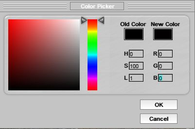
Данный способ выбора цвета аналогичен и в других фильтрах.
Еще один элемент управления присутствующий во многих фильтрах – инструмент Effect Mask (Эффект маски) (рис. 10). Правда инструментом это сложно назвать, скорее всего это что-то типа эффекта.
Щелчок на этой кнопке вызывает знакомое нам по прошлому уроку диалоговое окно Effect Masks (Маски эффектов). Сам же инструмент Effect Mask (Эффект маски) позволяет использовать эффект через маску выбранную в данном окне.
На применение инструмента Effect Mask (Эффект маски) влияет выбранный в фильтре режим. Для использования инструмента выбирайте режим Brush On (Кисть). Переключение на режим Global (Глобальный) приводит к удалению эффекта от использования Effect Mask (Эффект маски).
Фильтр Highlight Smear (Смазывание светов)
Название этого фильтра говорит само за себя. Окно фильтра представлено на рис. 11.
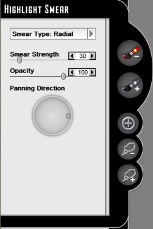
Этот фильтр позволяет смазывать изображение в светлых частях изображения. Выпадающее меню Smear Type (Тип смазывания) предоставляет на выбор два типа смазывания: Radial (Радиальное) и Panning (Панорамирование). Первый тип смазывания работает наподобие фильтра Radial Blur (Радиальная размытость). Это ограничивает применение данного типа смазывания, т. к. такой вид размытия применяется не часто.
Оба типа смазывания имеют ту особенность, что в изображении темные участки изображения смазываются намного меньше, чем светлые. Из этого следует вывод, что применять этот фильтр лучше к тем изображениям, где есть достаточно сильный перепад между светлыми и темными частями изображения. Однако это не означает, что его нельзя применять и в других ситуациях. Т. к. фильтр работает глобально, то естественно при его использовании придется часто использовать маскирование или использовать инструмент Brush Off Focal Areas (Кисть исключающая фокусируемую область).
Беглые эксперименты с этим фильтром показали, что область его применения достаточно узкая, как и большинства фильтров плагина. Хотя в определенных случаях, этот фильтр будет «находкой для шпиона». И хотя подбор изображения подходящего для демонстрации возможностей фильтра практически ничем не закончился, тем не менее рассмотрим небольшой пример.
На рис. 12 показано исходное изображение.
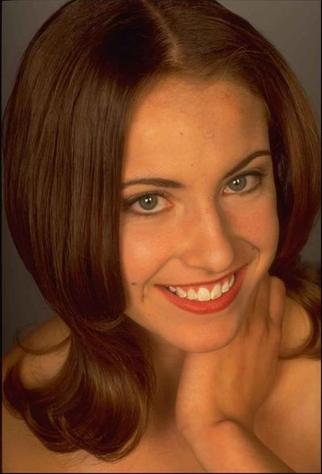
Размер этого изображения составляет 40% от исходного, а скриншоты будут и того меньше. Тем не менее видно, что это фото не подвергалось «жестокой обработке» Фотошопом, когда кожа выглядит более гладкой, чем пластина глянцевателя. Несмотря на некоторые дефекты в качестве самого фото, все же достаточно нормально видна текстура кожи.
Итак, что мы имеем в свете работы с рассматриваемым фильтром? Мы имеем более светлые участки кожи, более темные фон и волосы. Исходя из сказанного ранее, можно предположить, что фильтр свои усилия направит на кожу. Мы постараемся сгладить кожу девушки, убрав дефекты естественного и искусственного происхождения (имеется ввиду дефекты самой фотографии). Для этой цели тип смазывания Radial (Радиальное) никак не подойдет. Поэтому мы сразу выберем тип смазывания – Panning (Панорамирование).
Установим значение параметра Smear Strength (Степень смазывания) равным 20. По умолчанию, значение этого параметра равно 30, что многовато для нашего случая. Параметр Smear Strength (Степень смазывания) задает силу (степень) проявления эффекта.
Значение Opacity (Непрозрачность) оставим без изменения. Т. к. лицо девушки слегка наклонено, изменим направление смазывания с помощью интерактивного элемента Panning Direction (Направление панорамирования) (рис. 13).
Использование этого элемента управления потребует небольшой тренировки. Т. к. у этого элемента к сожалению нет, например, счетчика для точного указания угла наклона, то делается это интерактивно. А т. к. этот элемент довольно маленький, то даже незначительное перетаскивание мышью сильно меняет направление сглаживания. Нам надо на глазок установить направление примерно в 5 – 10 градусов. Сделав эти предварительные действия, получим промежуточный результат (рис. 14).
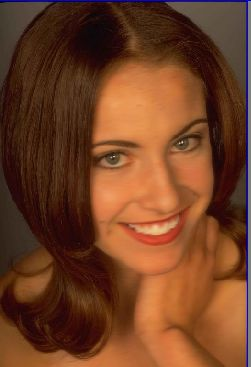
Этот скриншот сделан из окна плагина и маленький по сравнению с исходником. Но тем не менее видно, что произошло размытие кожи, а особенно это видно на зубах, т. к. они самые светлые. Обратите внимание, что на волосах такого размытия практически не заметно. Это и есть особенность работы фильтра.
Итак, что мы получили на данный момент? Кожа сгладилась, но увы не так, как нам хочется (это мало заметно на скриншоте). Плюс к этому, произошло ненужное смазывание в области глаз, вокруг овала лица, на переносице, в области рта, а также в области носа (кончик носа и теневые участки).
Что ж, исправить это в плагине не сложно. Для этого переключаемся на инструмент Brush Off Focal Areas (Кисть исключающая фокусируемую область) и обрабатываем участки, где нам нужно отменить действие эффекта (рис. 15). Однако для получения нормального результата, необходимо будет увеличить масштаб (Ctrl + =), а в окне Brush Palette (Палитра кистей) уменьшить размер кисти и менять значения Opacity (Непрозрачность) примерно от 10 до 30. Мягкость кисти можно не менять и оставить значение Feather (Размытие) без изменения, равным 100.
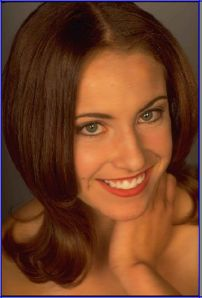
Чтобы было удобней сравнить рис. 14 и 15, я их разместил рядом (рис. 16).
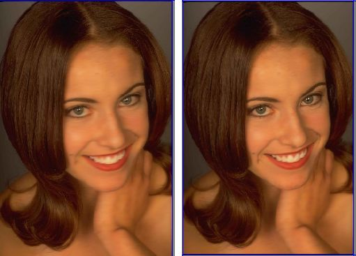
Как видите, небольшая обработка инструментом Brush Off Focal Areas (Кисть исключающая фокусируемую область), вернула к прежнему состоянию необходимые участки лица. Но надо учесть, что исходное состояние не вернулось полностью, потому что я задавал малое значение Opacity (Непрозрачность). Кроме этого обрабатывать было необходимо небольшими мазками кисти.
Если бы мы посмотрели на фото в его нормальном размере, то было бы видно, что направленное смазывание имеет свои минусы. Ведь оно направленное, а смазывание лица в одном направлении, не есть удачная мысль. Поэтому применим фильтр повторно, но с параметрами, как на рис.17. Чтобы его применить повторно, выполните команду Select Effect > Mystical Focus > Highlight Smear (Выбрать эффект > Мистический фокус > Смазывание светов).
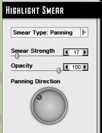
Как видите, значение Smear Strength (Степень смазывания) уменьшено до 17, а угол наклона элемента Panning Direction (Направление панорамирования) равен примерно 135 градусов.
В окне Layer Palette (Палитра слоев) вы увидите подтверждение повторного использования фильтра (рис. 18).
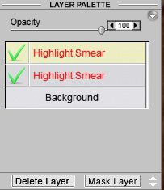
Т. к. повторное использование фильтра смазало те участки, которые мы восстановили, то потребуется повторное использование Brush Off Focal Areas (Кисть исключающая фокусируемую область), но с большими значениями Opacity (Непрозрачности).
На рис. 19 показаны результаты наших усилий и исходное фото.
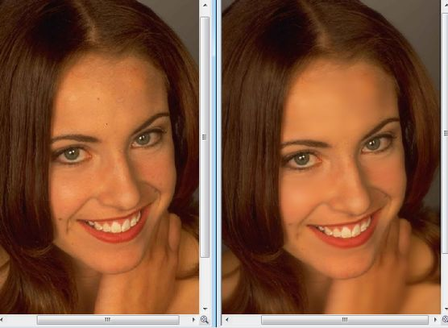
Как сами понимаете, скриншот уменьшил изображения до нельзя, но тем не менее сглаживание кожи видно. Особенно доброжелательно действие фильтра сказалось на зубах.
Итак, в этом примере мы рассмотрели принцип работы с фильтром. Я конечно сомневаюсь, что вы будете его использовать именно в таком качестве (для сглаживания кожи), но поиски изображения для демонстрации удачного примера, заняли бы больше времени, чем написание этой части урока.
Фильтр Highlight Streak (Штрих светов)
Фильтр Highlight Streak (Штрих светов) также можно смело отнести к нечасто используемым фильтрам, другими словами, к узкоспециализированным фильтрам, как и большинство фильтров плагина. Этот фильтр является аналогом фильтра Wind (Ветер) в Photo-Paint, но более «продвинутым». Но как я неоднократно говорил, в нужное время и в нужном месте, этот фильтр будет как нельзя кстати.
Окно фильтра показано на рис. 20.
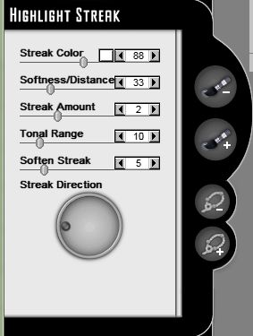
Ниже перечислены элементы управления фильтра:
• Streak Color (Цвет штриха) – определяет значения непрозрачности и цвет штрихов в светлых частях изображения;
• Softness/Distance (Мягкость/Интервал) – определяет, как далеко будут распространяться (отстоять) штрихи от их источника в изображении;
• Streak Amount (Количество штрихов) – определяет силу штриха. Сложно точно сформулировать действие этого параметра. С одной стороны, он усиливает действие эффекта и штрихи становятся более отчетливо видны, а с другой их размер также становится больше;
• Tonal Range (Тональный диапазон) – определяет область из которой будут прорисованы штрихи на основе значений цвета в изображении;
• Soften Streak (Смягчение штриха) – смягчает создаваемые штрихи в изображении. Действие этого параметра напоминает чем-то размывание;
• Streak Direction (Направление штриха) – этот интерактивный элемент задает направление создаваемых штрихов, что собственно и так интуитивно понятно.
Пожалуй более или менее приемлемое использование этого фильтра, которое мне в первую очередь пришло на ум, так это изображения, где необходимо создать рассеянный свет от какого-либо источника. Давайте рассмотрим маленький пример, которым мы и ограничимся в изучении этого фильтра.
На рис. 21 показано исходное изображение (сильно уменьшено).
В свете выше сказанного, проанализируем изображение. Тут как раз есть то, что нам нужно. Боковой свет от солнца и яркие лучи. Так как самыми светлыми областями являются лучи, то фильтр направит свои усилия в первую очередь на них. Но так как лучи и так уже являются размытыми, то размывать их сильней уже и не надо. Поэтому все что мы сделаем, так это поменяем цвет лучей солнца. Настройки в окне фильтра показаны на рис. 22.
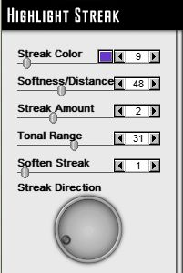
Щелкнем на маленьком квадратике с цветом, правее ползунка Streak Color (Цвет штриха) и в окне Color Picker (Указатель цвета) выберем цвет, как на рис. 23.
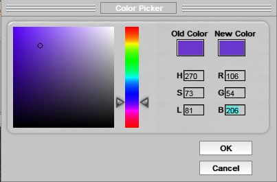
В итоге получим изображение (рис. 24).
Сравнивая рис. 24 и рис. 21 напрашивается вывод, что с помощью этого фильтра можно помимо прочего сделать эффект направленного рассеянного света. Я не стал исправлять цвет неба в верхней части изображения, т. к. хотел лишь показать суть работы этого фильтра.
Фильтры Specular Highlights (Отраженные света) и Specular Shapes (Отраженные фигуры).
Фильтр Specular Highlights (Отраженные света) я даже не хочу рассматривать, т. к., как на мой вкус его толком негде применить. Он создает эффект похожий на эффекты из группы Art Strokes (Художественные). Так что это фильтр на любителя. Работа с ним не очень сложная, поэтому освоить его можно и самостоятельно. Тем более после рассмотрения предыдущих фильтров у вас уже есть представление об элементах управления. Окно фильтра представлено на рис. 25.
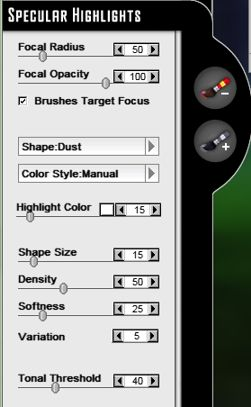
А вот фильтр Specular Shapes (Отраженные фигуры) может быть более востребованным (как на мой взгляд). С его помощью можно создавать эффекты, которых в Photo-Paint нет и в определенных ситуациях это затрудняет получение нужного эффекта. Окно фильтра показано на рис. 26.
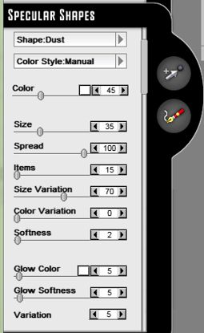
Сейчас я вам «покажу идею» работы фильтра и вы сразу же поймете где применить его возможности. А заодно по ходу ознакомимся с элементами управления. А может по ходу написания урока, я придумаю нормальный пример.
Всем наверняка приходилось видеть, а может и пытаться сделать эффекты типа всяческих блесточек, шариков, звездочек и бог знает чего еще, чтобы придать изображению некую сказочную или праздничную атмосферу. Так вот этот фильтр, как раз подходит для такой работы.
Но пока я думаю над подбором какого-нибудь примера, давайте просто посмотрим на работу фильтра, т. е. начнем с простейшего. Создайте пустой документ, размер документа большой сейчас не нужен. В качестве цвета фона выберите черный цвет.
Запустите плагин и выполните команду Select Effect > Mystical Focus > Specular Shapes (Выбрать эффект > Мистический фокус > Отраженные фигуры). По началу ничего не происходит, т. к. в этом фильтре нужно сделать предварительные телодвижения.
Сначала в раскрывающемся меню Shape (Фигура) (вверху окна фильтра) нужно выбрать желаемую форму фигуры (рис. 27).
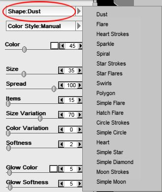
Как видите, список возможных форм довольно впечатляющий и может удовлетворить практически все потребности. После выбора формы фигуры потребуется как минимум задать путь, вдоль которого фигуры будут расположены. Путь задается инструментом Freeform Path (Произвольный путь) (рис. 28).
По умолчанию этот инструмент активен, т. к. без него эффект просто не будет применен к изображению. Теперь давайте не меняя пока никаких настроек в фильтре, просто выберем в меню Shape (Фигура) фигуру Simple Star (Простая звезда). Нарисуем инструментом Freeform Path (Произвольный путь) произвольную линию (рис. 29).
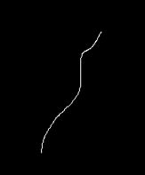
После того, как вы отпустите кнопку мыши, плагин перерисует изображение, добавив эффект (рис. 30).
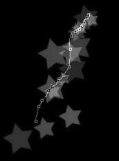
Вот теперь работа фильтра понятна, хотя с настройками по умолчанию результат выглядит и не очень впечатляюще.
Но давайте по ходу дела знакомиться с элементами управления.
Раскрывающееся меню Color Style (Стиль цвета) предоставляет два стиля цвета: Manual (Ручной) и Automatic (Автоматический) (рис. 31).
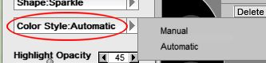
Собственно этот элемент управления определяет каким образом плагин будет формировать цвет фигур. При выборе варианта Manual (Ручной), появляется возможность выбора цвета фигуры и под выпадающим меню Color Style (Стиль цвета) появляется элемент управления Color (Цвет) (рис. 32 слева), который позволяет пользователю указать цвет и прозрачность цвета. При выборе варианта Automatic (Автоматический), плагин автоматически определяет цвет фигуры на основе цвета участка изображения находящегося под фигурами. В этой ситуации элемент управления Color (Цвет) меняется на Highlight Opacity (Непрозрачность света) (рис. 32 справа).
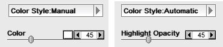
В нашем маленьком примере был выбран вариант Manual (Ручной). Теперь проведем еще одну линию (путь) и увеличим непрозрачность цвета с помощью ползунка Color (Цвет) до 80. Получим результат, как на рис. 33.
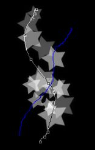
Сравните рис. 33 и рис. 30. Увеличение непрозрачности привело к более сильному проявлению эффекта (усилению цвета), собственно что было вполне ожидаемо.
Ниже расположены ползунки Size (Размер) и Spread (Разброс). Назначение этих элементов управления также понятно. Первый задает размер фигур, а второй их разброс или расстояние между ними. Для получения нужного результата обычно подбирают значения в этих ползунках одновременно, т. к. они логически между собой взаимосвязаны. Например, если Size (Размер) больше, то и значение Spread (Разброса) также желательно увеличить.
• Ползунок Items (Элементы) – задает количество фигур в эффекте.
• Ползунок Size Variation (Изменение размера) – задает «вариацию» размера. Другими словами, чем больше значение этого параметра, тем больше разнообразных по размеру фигур будет в эффекте.
• Ползунок Color Variation (Изменение цвета) – задает степень различия цвета в фигурах.
• Ползунок Softness (Мягкость) – задает степень мягкости фигур. Этот параметр по своему действию напоминает параметр Feather (Размытие).
• Ползунок Glow Color (Цвет свечения) – позволяет задать цвет свечения и его прозрачность под фигурами.
• Ползунок Glow Softness (Мягкость свечения) – задает величину размытия свечения.
• Элемент управления Variation (Изменение) – задает автоматическое изменение параметров и внешнего вида фигур в эффекте.
Еще один специфичный элемент управления в этом фильтре – Add/Delete Point (Добавление/Удаление точки) (рис. 34).
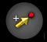
Если вы внимательно посмотрите на рис. 30 и рис. 33, то заметите, что на пути, который вы создаете, появляются управляющие точки. Их можно добавлять или удалять, таким образом формируя путь. Для этой цели и служит инструмент Add/Delete Point (Добавление/Удаление точки). Для добавления точки к пути, щелкните этим инструментом на пути. Для удаления точки, щелкните этим инструментом на существующей точке.
Вот например эффект, который можно получить (рис. 35).
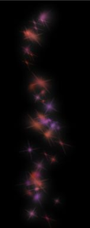
Настройки в фильтре показаны на рис. 36.
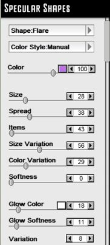
Обратите внимание, что в качестве фигуры был выбран вариант Flare (Вспышка).
Давайте теперь рассмотрим хоть какой-нибудь пример. На рис. 37 показано исходное изображение.
")
Запустим плагин и выберем фильтр Specular Shapes (Отраженные фигуры). В окне фильтра сделаем настройки, как на рис. 38.
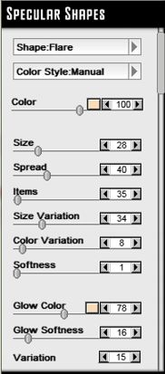
Зададим в элементе управления Color (Цвет) цвет: R: 250; G: 220; В: 182, а в элементе управления Glow Color (Цвет свечения): R: 247; G: 218; В: 183.
С помощью инструмента Freeform Path (Произвольный путь) нарисуем путь, как на рис. 39.
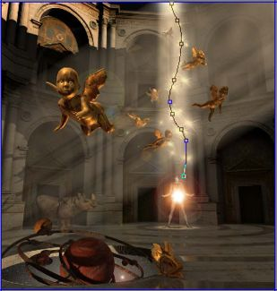
Получим в итоге изображение, как на рис. 40.
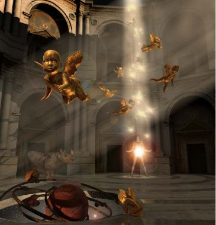
Можно было дополнительно сначала продублировать исходное изображение (хотя можно было только сделать дубликат фона). Затем на исходное изображение наложить изображение с эффектом и поменять в докере Objects (Объекты) режим наложения на Hard Light (рис. 41).
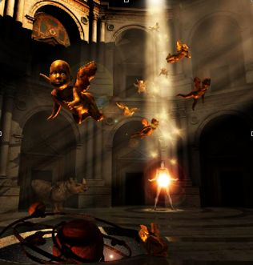
А затем удалить верхний объект кроме луча с эффектом. Но это уже нюансы, которые всяк делает по своему вкусу.
Фильтры Vignette (Виньетка) и Masking Layer (Маскировочный слой)
Фильтр Vignette (Виньетка) – последний фильтр в группе Atmosphere (Атмосфера), который мы не рассмотрели. Но я не сильно ошибусь, если скажу, что рассматривать подробно его нет смысла. Как говорится, виньетка – она и в Африке виньетка.
Фильтр Masking Layer (Маскировочный слой) относится к группе Special (Специальные) и он также будет понятен пользователю без разъяснений, т. к. этот фильтр ничего не делает, кроме как создает маску. Его также можно вызвать нажатием кнопки Mask Layer (Слой-маска) в окне Layer Palette (Палитра слоев), которое мы уже рассматривали раньше.
На этом я закончу этот урок. Далее мы познакомимся с фильтрами группы Mystical Lighting & Ambiance (Мистическое освещение и окружение).